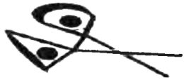

BİR CADI ŞİŞESİ
Günün ilk ışıklarıyla birlikte yola koyulduğumuzda münzevi hâlâ uyuyordu. Gökyüzü açıktı, fakat ufukta görünen karla kaplı Büyük Göl'e doğru kuzeye ilerlemeye başladığımızda hava çok soğuktu. Keskin soğuğa rağmen ayaklarımızın altındaki don çok geçmeden erimeye ve toprak çamurlaşmaya başladı.
Ufak bir köprüden geçerek Leven Nehri'ni aşıp gölün batı kıyısı boyunca devam ettikçe ilerlemek iyice güçleşti; dar patika sık kozalaklı ağaçların arasından geçiyordu, hemen solumuzdaysa sarp kayalıklar yükseliyordu.
Pençe'nin davranışlarına bakılacak olursa üç kayıp koyundan farksızdık. Etrafımızda dönüp duruyor, sonra dönüp arkamıza geçerek bizi koyun gibi güdüyordu. Bu ona Arkwright'ın öğrettiği bir şeydi: Tehlikelere karşı uyanıktı, kendi küçük sürüsünü her yönden gelebilecek tehlikelere karşı kolluyordu.
Bir süre sonra yavaşlayıp Alice ile birlikte yürümeye başladım. Akşamki tartışmamızdan beri konuşmamıştık.
"İyi misin Alice?" diye sordum.
"Daha iyi olmamıştım," dedi biraz fazla ciddi bir tavırla.
"Tartışma için üzgünüm," dedim.
"Önemli değil Tom. Sadece en iyisini yapmaya çalıştığını biliyorum."
"Hâlâ dost muyuz?"
"Tabii ki..." Bir süre sessizce yürüdükten sonra şöyle dedi: "Bir planım var Tom. Şeytan'ı bizden uzak tutacak bir plan."
Sertçe dönüp ona baktım. "Umarım bu Karanlık'ın yöntemleriyle ilgili bir şey değildir Alice," dedim fakat sorumu yanıtlamadı.
"Planımı duymak istiyor musun, istemiyor musun?"
"Dinliyorum," dedim.
"Cadı şişesi nedir bilir misin?" diye sordu.
"Daha önce duymuştum, fakat nasıl kullanıldığını bilmiyorum. Hayalet buna inanmıyor." Cadı şişesi cadılığa karşı bir tür savunmaydı, ancak Hayalet bunların yalnızca batıl inançları olan zayıf kişiler tarafından kullanılan şeyler olduğunu düşünüyordu.
"Yaşlı Gregory ne bilir ki?" dedi Alice öfkelenerek. "Doğru yaparsan işe yarar, endişelenme. Kemikli Lizzie onlara çok güvenirdi. Düşman bir cadı, kendi karanlık güçlerini sana karşı kullandığında bunu durdurmanın bir yolu var. Önce bir miktar idrarın gerekiyor. Zor olan kısım bu; fakat çok fazla değil. Yalnızca şişeye konabilecek kadar olması yeterli. Sonra idrara bükülmüş iğneler, sivri taşlar ve demir çiviler koyup şişeyi kapatıp iyice sallıyorsun. Sonra üç gün güneşte bırakıyorsun ve bir sonraki dolunayda bir gübre yığınının altına gömüyorsun.
Ardından iş neredeyse bitmiş oluyor. Cadı, bir sonraki tuvalete çıkışında acı içinde kıvranıyor. Sanki kızgın iğne işemeye çalışıyor gibi! O zaman geriye yalnızca ona bir not bırakıp ne yaptığını anlatmak kalıyor. Çok geçmeden üzerindeki büyüyü kaldırıyor. Ama sen bir daha kullanman gerekebilir diye şişeyi saklıyorsun!"
Alaycı bir şekilde güldüm. "Yani Şeytan'a karşı bunu mu kullanacaksın Alice?" diye dalga geçtim. "İdrar ve eğri büğrü birkaç iğne?"
"Birbirimizi uzun zamandır tanıyoruz Tom ve artık aptal olmadığımı anlamış olduğunu düşünüyorum. Bu şekilde güldüğün için kendinden utanmalısın. Bu çok çirkin bir gülüştü. Tanıştığımızda iyi biriydin. Ne dersem diyeyim bana bu şekilde gülmezdin. Bunu yapmayacak kadar iyi ve saygılıydın. Değişme Tom, lütfen! Daha sert biri olman gerekebilir, fakat bu şekilde değil. Ben senin arkadaşınım. İnsan arkadaşlarını bu şekilde incitmez, ne kadar korkmuş olursan ol."
Bu sözler üzerine boğazım düğümlendi ve konuşamadım, gözlerim yaşlarla doldu. "Üzgünüm Alice," diyebildim en sonunda. "Böyle demek istememiştim. Haklısın. Gerçekten korkuyorum, fakat bunun acısını senden çıkarmamalıyım."
"Sorun değil Tom. Canını sıkma, ama sözümü bitirmeme izin vermedin. Buna benzer bir yöntem kullanmayı düşündüğümü söyleyecektim. Ama idrar değil. Ben kan kullanacağım. Yani çok özel birinden kan almamız gerek. Şeytan'ı kast etmiyorum; hem zaten bunu nasıl yapabiliriz ki? Kızı Morwena'nın kanı işe yarayacaktır! Ondan biraz kan almayı başarabilirsek gerisini ben hallederim."
Alice ceketinin cebinden bir şey çıkarıp havaya kaldırarak bana gösterdi. Bu, kilden yapılmış ve ucunda mantar tıpası olan küçücük bir kaptı.
"Buna kan kabı derler," dedi. "Morwena'nın kanını buna alıp senin kanınla karıştırmalıyız. O zaman Şeytan'ın senden uzak durması gerekir. Güvende olacağına eminim. Fazla kan gerekmiyor. Her ikinizden de birkaç damla yeter..."
"İyi de bu kara büyü Alice. Eğer Hayalet bunu duyarsa seni sonsuza dek yanından kovar, hatta bahçesinde bir çukura bile kapatabilir. Kendini düşünsene. Kendi ruhunu. Dikkatli olmazsan Şeytan'ın emrine girebilirsin!"
Ben daha başka bir şey diyemeden Hayalet adımı seslenip yanına gitmem için eliyle işaret etti. Koşup yanına giderek Alice'i arkada bıraktım.
Yürümeye devam ettik, patika artık gölün kıyısına iyiden iyiye yaklaşmıştı ve Hayalet sürekli olarak tedirgin bir şekilde suya bakıyordu. Morwena ya da diğer cadılardan gelebilecek olan tehlikeleri düşünüyor olmalıydı. Her an sudan çıkıp bize saldırabilirlerdi. Ama ben Alice ya da Pençe'nin bizi en azından bir süre önce uyarabilecek oluşuna güveniyordum.
Acaba değirmeni terk ettiğimizden bu yana Morwena bizi uzaktan izleyip saldırıya geçmek için fırsat mı kolluyordu? Gölün her iki kıyısı da oldukça sık ağaçlarla kaplıydı. Bu sık bitki örtüsünün arasında ilerliyor ya da durgun su yüzeyinin hemen altında yüzüyor olabilirdi. Kış güneşi solgun ışığıyla civar kırları aydınlatıyordu ve görüş mesafesi oldukça iyiydi, herhangi bir tehlike sezinlemiyordum. Ne var ki gece çöktüğünde durum çok farklı bir hal alırdı.
Herhalde daha çok yanılıyor olamazdım. Dört bir yanımız tehlikeyle sarılıydı, çünkü Hayalet aniden durup sağımızda, göl kıyısına elli adımdan daha yakın bir ağacı işaret etti.
Ağacın gövdesine kazınmış olan işareti görünce yüreğim ağzıma geldi...

"Yakın zamanda yapılmışa benziyor," dedi ustam. "Şimdi düşünmemiz gereken bir başka düşmanımız daha var!"
Bu Grimalkin'in işaretiydi. Yaz aylarında Malkinler tarafından beni öldürmek üzere gönderilmişti ve ben onu kandırarak canımı zor kurtarmıştım. Fakat işte şimdi geri dönmüştü. Pendle'ı neden terk etmişti acaba?
"Onu yine mi peşime takmışlar?" diye sordum korkuya kapılarak. "O da Şeytan'ın kızlarından biri olamaz, değil mi?"
Hayalet göğüs geçirdi. "Bunu kestirmek imkânsız evlat, ama en azından bildiğim kadarıyla öyle değil. Yine de tuhaf bir şeyler dönüyor. Geçtiğimiz hafta Pendle'a gittiğimde cadı klanlarına fazla yaklaşmadan ziyaretimi Malkin Kulesi'yle sınırlı tuttum. Ancak bir şeyler sezinliyordum. Yakılmış birkaç kulübe geçtim ve Karga Ormanı'nda çürüyen bazı cesetler vardı. Hem de üç klandan; Malkinler, Deaneler ve Mouldheeller'den de... Görünüşe bakılırsa bir savaş çıkmıştı. Karanlık, kendi arasında savaşıyor olabilir. Peki ama Grimalkin neden kuzeye geldi? Bunun seninle ilgisi olmayabilir, ama ikinizin de aynı anda burada olması çok büyük bir tesadüf. Neyse, uyarı işaretini sahile yakın bir yere çizmiş, iyice temkinli olmakta fayda var."
Akşamüzeri geç vakit, Belle Adası'nı gördük. İlerlemeye devam ettikçe gölün kıyısına düşündüğümden çok daha yakın olduğunu fark ettim, en yakın noktası sadece yüz elli metre kadar açıktaydı.
Civarda teknecilerin düzenli olarak açıldığı iskeleler vardı, ancak bizi çok az bir ücret karşılığında, gölün en uzak kıyısına kadar götürebileceklerken, gümüş para teklif etmemize rağmen adaya olan kısacık mesafe için kiralayacak bir tekne bulamadık.
Nedenini sorduğumuzda hepsinden kaçamak yanıtlar aldık. "Gece ya da gündüz fark etmez, orası gidilecek bir yer değil. Tabii ruh sağlığınızı önemsiyorsanız," diye uyardı görüştüğümüz üçüncü tekneci. Ardından, muhtemelen Hayalet'in ısrarından sıkılarak yosunların arasına bağlanmış köhne bir sandalı işaret etti. "Bu sandalın sahibi olan kadın sizi oraya götürebilecek kadar kaçık olabilir."
"Onu nerede bulabiliriz?" diye sordu Hayalet.
"İki kilometre kadar geri giderseniz kulübesinin kapısına ulaşırsınız," dedi adam çirkin bir şekilde gülüp eliyle kuzey istikametini belli belirsiz işaret ederek. "Kaçık Deana diye bilinir. Fakat asıl adı Deana Beck'tir! Bu iş için bulabileceğiniz en iyisi odur!"
"Neden kaçık?" diye üsteledi Hayalet suratını asarak. Adamın tavrından hiç hoşlanmadığı açıktı.
"Çünkü bu yaşlı kız neyin iyi neyin kötü olduğunu ayırt edemiyor!" diyerek cevabı yapıştırdı adam. "Endişe edecek bir ailesi yok. Bu yüzden de yaşayıp yaşamamak pek umurunda değil. Yarım akıllılar bile o cadı kazanı adanın yanına yanaşmaz."
"Adada cadılar var mı?" diye sordu Hayalet.
"Ara sıra gelirler. Yaklaşırsan sürüyle cadı görürsün, ama aklı başında olanlar aksi istikamete gider. Hiçbir şey olmuyormuş gibi yaparlar. Siz gidip Kaçık Deana ile konuşun."
Yanından uzaklaşırken tekneci hâlâ gülüyordu. Çok geçmeden dik, ahşap bir yükseltiye yaslanmış sazdan bir kulübeye ulaştık. Hayalet kapıyı çalarken Pençe gölün kıyısına inip adaya bakmaya başladı. Çok geçmeden sürgünün açıldığını duyduk ve kapı aralığından şüpheli bir göz, bizi süzmeye başladı.
"Çekin gidin buradan!" diye aksi aksi homurdanan bu sesin kadın sesiyle uzaktan yakından alakası yoktu. "Burada berduş ve hırsızlara yer yok."
"Biz dilenmeye gelmedik," diye açıkladı Hayalet sabırlı bir şekilde. "Adım John Gregory. Yardımına ihtiyacım var ve iyi bir ücret ödemeye hazırım. Seni öve öve bitiremediler."
"Öve öve bitiremediler, öyle mi? O halde paranın rengini bir görelim..."
Hayalet cübbesinin cebine uzanıp gümüş bir para çıkararak aralık kapıya doğru uzattı. "Bu peşinat, işi tamamladığında aynısından bir tane daha alacaksın."
"Ne işiymiş bu? Ne işi? Söyle bakalım! Vaktimi boşa harcama benim."
"Belle Adası'na gitmemiz gerekiyor. Bizi geçirebilir misin? Ve tabii sonrasında bizi sağ salim geri getireceksin."
Yavaşça gün ışığına çıkan yamru yumru el, Hayalet parayı avuç içine bırakır bırakmaz sımsıkı kapandı. "Bunu kesinlikle yapabilirim," dedi daha yumuşak bir ses tonuyla. "Ama yolculuk tehlikeli olacaktır. En iyisi içeri girin de kemikleriniz ısınsın."
Kapı iyice aralanınca karşımızda Deana Beck'i gördük: Üzerinde deri pantolonla leş gibi bir gömlek, ayağındaysa kocaman, kaba saba botlar vardı. Beyaz saçları kısacık kesilmişti ve bir an için, karşımda bir erkek duruyor sandım. Fakat zekâ pırıltıları saçan gözleri kadınsıydı ve dudakları mükemmel bir yay şeklindeydi. Yaşını gösteren yüzü kırışmıştı fakat oldukça güçlü kuvvetli görünüyordu. Kesinlikle adaya kadar kürek çekebilirdi.
Odada, köşeye yerleştirilmiş ufak bir masa dışında eşya yoktu. Sert taş zemine sazlar atılmıştı ve Deana ateşin yanına çömelip eliyle bize de aynısını yapmamızı işaret etti.
"Rahat mısınız?" diye sordu biz yerleşir yerleşmez.
"Yaşlı kemiklerim sandalyeyi yeğler," diye yanıtladı Hayalet ifadesiz bir şekilde. "Fakat berduş ve dilenciler seçim yapamazlar."
Bunun üzerine Deana gülümseyip başını salladı. "Eh, ben bütün hayatımı sandalye konforu olmadan geçirdim," dedi, sesi artık iyice yumuşamıştı ve hoş bir tonu vardı. "O halde söyleyin bakalım, adaya neden gitmek istiyorsunuz? Bir hayaleti Belle Adası'na getiren şey nedir? Buraya cadıları haklamaya mı geldiniz?"
"Tam olarak öyle sayılmaz, tabii yolumuza çıkmadıkları sürece," diye itiraf etti Hayalet. "En azından bu kez değil. Meslektaşlarımdan biri günlerdir kayıp ve adada olduğuna inanmamızı sağlayacak sağlam nedenlerimiz var."
"Bu kadar emin olmanızı sağlayan nedir?"
"Bir bulucuya danıştık; Cartmel'den Judd Atkins'e."
"Onunla daha önce bir kez tanışmıştım," dedi Deana başını aşağı yukarı sallayarak. "Bu civarda gölün içinde bir ceset buldu. Yani eğer Atkins orada olduğunu söylüyorsa muhtemelen oradadır. İyi de oraya nasıl gitti? Benim öğrenmek istediğim bu."
Hayalet göğüs geçirdi. "Bir su cadısıyla baş etmeye çalışırken kaçırıldı. Tabii kasaba halkı da bu işin içinde olabilir. Coniston ya da civar kasabalardan biri."
Deana Beck'in nasıl bir tepki vereceğini görmek için yüzüne dikkatle baktım. Bu işe karışmış olabilir miydi? Ona güvenebilir miydik?
"Buralarda hayat zordur," dedi en sonunda. "Ve hayatta kalmak için ne gerekiyorsa yapman gerekir. Çoğu her şeyi görmezden gelir, ama sudaki karanlık güçlerle işbirliği yapanlar da mutlaka çıkar. Kendilerinin ve ailelerinin güvende olmalarını sağlamak için ne gerekiyorsa yaparlar. Eve ekmek getiren kişi öldüğünde aileyi zor günler bekler. Hatta bazen açlıktan ölürler."
"Peki ya sen Deana Beck?" diye sordu Hayalet ona sertçe bakarak. "Sen Karanlık'la işbirliği yaptın mı?"
Deana başını iki yana salladı. "Hayır," dedi. "Cadılarla işim olmaz. Hem de hiç... Bir ailem olmadı ve uzun, yalnız bir hayat yaşadım. Yine de buna pişman değilim, çünkü şimdi düşünmem gereken bir ailem yok. Bakacak başka kimsen olmadığında, daha az korkarsın. Cadılar beni korkutmuyor. Ne istersem onu yapıyorum."
"O halde bizi sandalınla oraya götürebilirsin?" diye sordu Hayalet.
"Hava kararır kararmaz. Oraya gün ışığında gitmek istemeyiz. Herkes izliyor olabilir. Hatta belki de şu arkadaşınızı adaya gönderen insanlar da... Ve onlarla karşılaşmak istemeyiz."
"Kesinlikle öyle," dedi Hayalet.
Deana akşam yemeğini paylaşmayı önerdiyse de Hayalet hepimiz adına yanıt vererek reddetti. Ağzım sulanıp karnım guruldarken Deana'nın dumanı tüten bir tavşan yahnisini kaşıklamasını izlemek zorunda kaldım. Çok yakında hava kararacaktı ve adada her ne varsa onunla savaşmamız gerekecekti.